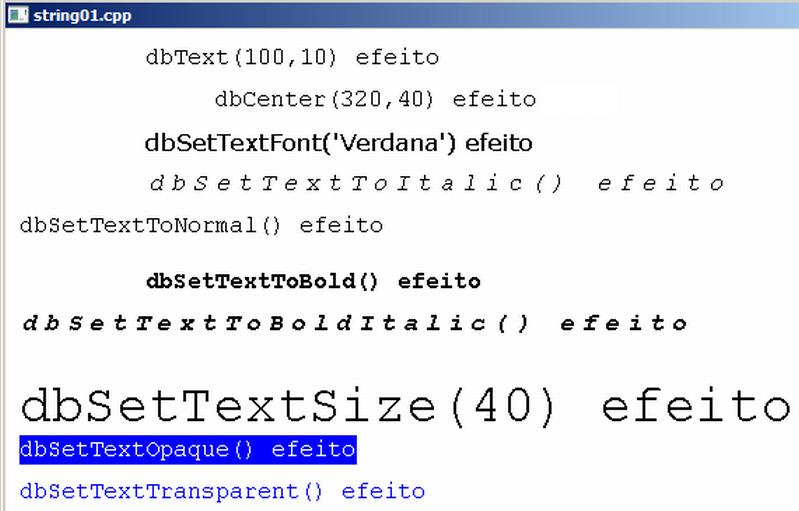

Curso completo de DarkGdk
Gameprog - Escola de programação de jogos digitais
Contato: gameprog.br@gmail.com
Fase 2.1
02.1 Posicionamento, configuração e exibição de textos
2.1 Visão geral
Nesta seção vamos ver funções de posicionamento, configuração e exibição de
texto na tela.
| Função | Descrição |
dbText( xpos, ypos, txt)
void dbText ( int iX, int iY, char* szString ) |
Essa função exibe a string txt na posição (xpos,ypos) |
dbCenterText (xpos, ypos, txt)
void dbCenterText ( int iX, int iY, char* szString ) |
Essa função centraliza a string txt na posição (xpos,ypos) |
dbSetTextFont (sFonte)
void dbSetTextFont ( char* szFont ) |
Essa função configura a fonte de exibição de texto na tela |
dbSetTextSize (nTam)
void dbSetTextSize ( int iSize ) |
Essa função configura o tamanho da fonte |
dbSetTextOpaque ( )
void dbSetTextOpaque ( void ) |
Configura o texto como opaco. Impressão do texto não preserva o fundo. |
dbSetTextTransparent ( )
void dbSetTextTransparent ( void ) |
Configura o texto como transparente. Impressão do texto preserva o fundo. |
dbSetTextToNormal ( )
void dbSetTextToNormal ( void ) |
Configura a saida de texto como normal ( sem bold, italic e underline) |
dbSetTextToItalic ( )
void dbSetTextToItalic ( void ) |
Configura a saida de texto como italic |
dbSetTextToBold ( )
void dbSetTextToBold ( void ) |
Configura a saida de texto como bold |
dbSetTextToBoldItalic ( )
void dbSetTextToBoldItalic ( void ) |
Configura a saida de texto como bold e italic |
dbPerformCheckListForFonts ( )
void dbPerformCheckListForFonts ( void ) |
Produz uma listagem com as fontes instaladas no sistema |

// string01.cpp
// Esse programa ilustra o uso de funções de texto
// Sempre que usar a Dark GDK você deve garantir a inclusão desse arquivo
#include "DarkGDK.h"
void initsys();
void tst_texto_01();
// Eis aqui o ponto de entrada da sua aplicação
void DarkGDK ( void ) {
initsys();
// Nosso looping principal
while ( LoopGDK ( ) ) {
tst_texto_01();
// Atualize a tela.
dbSync ( );
} // fim do while principal
return;
} // fim da função: DarkGDK
// ----------------------------------------------------------------------------
// Inicialização básica do sistema
void initsys() {
int nBranco = 0xFFFFFF;
int nPreto = 0;
dbCLS(nBranco);
dbInk(nPreto, nBranco);
dbSetWindowTitle ("string01.cpp");
// Configurando o video para a maxima performance a 60 fps
dbSyncOn ( );
dbSyncRate ( 60 );
} // fim da função: initsys()
// ----------------------------------------------------------------------------
// txt_texto_01() Primeira bateria de testes de texto
void tst_texto_01() {
// configuração padrão das fontes
int nPreto = 0;
int nAzul = 0x0000FF;
int nBranco = 0xFFFFFF;
dbInk(nPreto, nBranco);
dbSetTextFont("Courier New"); dbSetTextSize(20);
dbSetTextToNormal(); dbSetTextTransparent();
// Testando dbText() e dbCenterText()
dbText (100,10, "dbText(100,10) efeito");
dbCenterText (320,40, "dbCenter(320,40) efeito");
// Testando dbSetTextFont()
dbSetTextFont("Verdana");
dbText (100,70, "dbSetTextFont('Verdana') efeito");
dbSetTextFont("Courier New");
// Testando dbSetTextToItalic()
dbSetTextToItalic();
dbText (100,100, "dbSetTextToItalic() efeito");
// Testando dbSetTextToNormal()
dbSetTextToNormal();
dbText (10,130, "dbSetTextToNormal() efeito");
// Testando dbSetTextToBold()
dbSetTextToNormal();
dbSetTextToBold();
dbText (100,170, "dbSetTextToBold() efeito");
// Testando dbSetTextToBoldItalic()
dbSetTextToNormal();
dbSetTextToBoldItalic();
dbText (10,200, "dbSetTextToBoldItalic() efeito");
// Testando dbSetTextSize()
dbSetTextToNormal();
dbSetTextSize(40);
dbText (10,250, "dbSetTextSize(40) efeito");
dbSetTextSize(20);
// Testando dbSetTextOpaque()
dbInk (nBranco, nAzul);
dbSetTextOpaque();
dbText (10,290, "dbSetTextOpaque() efeito");
// Testando dbSetTextTransparent()
dbInk (nAzul, nBranco);
dbSetTextTransparent();
dbText (10,320, "dbSetTextTransparent() efeito");
} // fim da função: tst_texto_01()